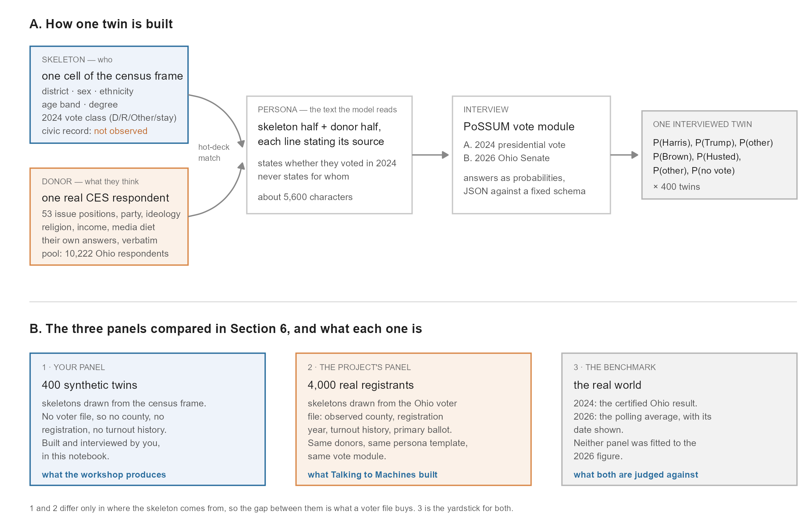

Notebook 2 — Personas and the digital interview
LLMSS 2026, Workshop 1 (AIPOP) · Hong Kong, 13 October 2026
What you will do
Notebook 1 gave you 400 skeletons: slots in the Ohio frame with a district, a sex, an age, an ethnicity, a degree and a 2024 vote class, and nothing else. A skeleton cannot be interviewed. This notebook gives each one a voice and then asks it how it votes.
By the end you will have:
- matched every skeleton to a real survey respondent: an Ohio respondent to the Cooperative Election Study (CES), 2020–2025;
- rendered each twin as a persona, the text record the model reads;
- interviewed the panel with the Talking to Machines vote module;
- aggregated the answers and checked them against the certified 2024 result and the 2026 Senate polls.
The objects, before any code
Figure 2.1. How one twin is built (A), and the three panels compared in Section 6 (B).
A twin is a skeleton plus a donor, written out as one block of text called a persona. The skeleton says who the person is: one cell of the census frame, drawn in Notebook 1. The donor says what they think: one real CES respondent, matched to the skeleton. Neither is a twin on its own.
A civic record is what a state voter file records about a registrant: their county, the year they registered, which general elections they voted in, and which primary ballot they last took. A registrant twin carries one. Yours carries an empty one, because a synthetic skeleton has no voter-file row behind it, and the persona says “not observed” rather than inventing it.
Three panels, with fixed names. Section 6 compares three things, and this notebook keeps their names throughout:
- your panel: 400 synthetic twins, built and interviewed here;
- the project’s panel: 4,000 real registrants from the Ohio voter file, with the same donors, persona template and vote module;
- the benchmark: the certified 2024 result and the 2026 polling average.
Panels 1 and 2 differ only in where the skeleton comes from, so the gap between them is what a voter file buys. Neither panel was fitted to the 2026 figure.
Where the attitudes come from. The skeleton fixes who the twin is. Its values, issue positions, circumstances and media diet are donated by the matched respondent, and the persona says so line by line. The model is given this whole record and asked how this person would vote. It is not asked to make a person up.
How to read this notebook. As in Notebook 1, every table the code prints has a number (Table 2.1, …), given in bold just above the code that prints it, and the text says which table, row or column a number comes from.
The first block loads the R packages the notebook uses, sets the folders it reads from (data/) and writes to (output/), and fixes the random seed.
library(arrow)
library(data.table)
library(ggplot2)
library(jsonlite)
DATA <- file.path("..", "data")
OUT <- file.path("..", "output")
set.seed(20261013L)1. Your panel
At this point, “your panel” is the 400 skeletons Notebook 1 deposited: no donor, no persona and no answers yet. The block below loads them from output/oh_mini_panel_400.parquet as a table called panel, and prints its size and first three rows.
Table 2.1. panel, your 400 skeletons from Notebook 1: size, then the first three.
panel <- as.data.table(read_parquet(file.path(OUT, "oh_mini_panel_400.parquet")))
panel[, vote2024 := as.character(vote2024)]
dim(panel)[1] 400 10head(panel, 3)| twin_id | cd | gender | ethnicity | age_bins | college_grad | vote2024 | age | civic_record | weight |
|---|---|---|---|---|---|---|---|---|---|
| oh_syn_0001 | OH-01 | F | Asian | 35-44 | Has a College Degree | D | 35 | not observed (synthetic skeleton drawn from the ACS frame) | 0.7637752 |
| oh_syn_0002 | OH-01 | M | Black | 45-54 | Does not have a College Degree | D | 45 | not observed (synthetic skeleton drawn from the ACS frame) | 0.9539401 |
| oh_syn_0003 | OH-01 | F | Black | 65+ | Has a College Degree | D | 75 | not observed (synthetic skeleton drawn from the ACS frame) | 0.9320156 |
Table 2.1 is Notebook 1’s Table 1.9 again, with two columns Notebook 1 added later: civic_record (“not observed”) and the rake weight.
Matching compares skeletons with donors, so the skeleton has to be described in the donor pool’s categories. These are coarser than the frame’s: four age bands, four ethnicity groups and a degree flag. They are used only to find a donor.
The block below adds those four matching columns to panel: sexk (sex), age_band (four bands, cut from age), eth4 (Hispanic, Black, White, and Other for everyone else) and educ2 (degree or no degree). It then counts the skeletons in each eth4 group.
Table 2.2. panel: skeletons per matching ethnicity group (eth4).
panel[, `:=`(
sexk = gender,
age_band = as.character(cut(age, c(17, 29, 44, 64, 200),
labels = c("18-29", "30-44", "45-64", "65+"))),
eth4 = fcase(ethnicity %in% c("Hispanic", "Black", "White"), ethnicity,
default = "Other"),
educ2 = fifelse(college_grad == "Has a College Degree", "degree", "nodegree")
)]
panel[, .N, by = .(eth4)][order(-N)]| eth4 | N |
|---|---|
| White | 318 |
| Black | 47 |
| Other | 21 |
| Hispanic | 14 |
Table 2.2 shows how thin some groups are: 318 White skeletons, but only 21 in Other (Asian, mixed-race, Native and other) and 14 Hispanic. That matters in Section 3.
2. The donor pool
The donors are every Ohio respondent to the Cooperative Election Study (CES) from 2020 to 2025: about ten thousand people, each with their own answers on party, ideology, 53 harmonised issue items, circumstances, religion and media use. The CES is a large academic survey of American adults, run every year.
The block below loads the pool as a table called pool, one row per respondent. It gives each respondent a row number (donor_row), which the matching uses to point at a donor, and counts respondents by survey wave and by where their 2024 vote class comes from (vote_class_from).
Table 2.3. pool, the donors: respondents per CES wave, and the source of their 2024 vote class.
pool <- as.data.table(read_parquet(file.path(DATA, "oh_ces_donors.parquet")))
pool[, `:=`(donor_row = .I, sexk = sex)]
pool[, .(respondents = .N), by = .(wave = donor_year, vote_class_from = vote_source)][order(wave)]| wave | vote_class_from | respondents |
|---|---|---|
| 2020 | pid7_proxy | 1730 |
| 2020 | cl2020_validated_nonvoter_proxy | 870 |
| 2021 | pid7_proxy | 978 |
| 2022 | pid7_proxy | 2515 |
| 2023 | pid7_proxy | 957 |
| 2024 | ces2024_reported | 2564 |
| 2025 | pid7_proxy | 608 |
The 2024 vote class is a matching key, not an outcome. Each skeleton got its class in Notebook 1, from the stage-2 model raked to the certified district result, before any donor existed. A donor must share it, so donors need a class too. Table 2.3 shows where each donor’s class comes from:
ces2024_reported(2,564 respondents): only the 2024 wave asked about the 2024 vote, so these donors report it;pid7_proxy: for the other waves the class comes from party identification (the CES questionpid7), with independents as “Other”;cl2020_validated_nonvoter_proxy(870 respondents, 2020 wave): respondents with no validated November 2020 vote record stand in for 2024 stay-at-homes.
pool also carries a column called donor_text: the donor’s half of the persona, written out in advance for every respondent. It was produced with the rendering code of the Talking to Machines Ohio panel, and that code was checked against the panel’s 4,000 personas: it reproduces their donor halves character for character. The block below prints the first 900 characters of the first donor’s text.
Text 2.1. The start of one donor’s donor_text.
cat(substr(pool$donor_text[1], 1, 900), "...\n")-- VALUES & POLITICS (donated from CES 2020 respondent #1155290903) --
- Party identification: Strong Democrat
- Party identification including leaners: Democrat (Including Leaners)
- Ideology: Liberal
- Retrospective economic evaluation (as of 2020): Gotten much worse
- Presidential approval (as of 2020): Strongly Disapprove
- Issue positions (the donor's own answers, CES 2020):
- Gun control - Ban assault rifles: Support
- Gun control - Make it easier for people to obtain concealed-carry permit: Oppose
- Gun control - Increase the number of police on the street by 10 percent, even if it means fewer funds for other public services: Oppose
- Gun control - Decrease the number of police on the street by 10 percent, and increase funding for other public services: Support
- Grant legal status to all illegal immigrants who have held jobs and paid taxes for at least 3 years, and ...The header of Text 2.1 names the donor: the CES wave and the respondent’s id. Each line below it is one of the donor’s own survey answers.
3. Hot-deck matching
Each skeleton is matched to a donor in its own cell, on five nested keys. The algorithm tries the finest key first and falls back only when the cell holds fewer than five donors:
| Level | Key |
|---|---|
| 1 | sex × age band × ethnicity × 2024 vote × degree |
| 2 | sex × age band × ethnicity × 2024 vote |
| 3 | age band × ethnicity × 2024 vote |
| 4 | sex × age band × ethnicity |
| 5 | age band × ethnicity |
Age band and ethnicity are in every key, so they always match. The vote class drops out only at levels 4 and 5. Within a cell the donor is drawn at random.
The block below writes the five keys as functions (K) and the matching as a function, hotdeck(). For each skeleton, hotdeck() looks for donors with the same level-1 key; if there are at least five (THIN_CELL), it draws one at random, and otherwise it tries level 2, and so on. It records the donor’s row (donor_row), the level it matched at (level), and how many candidate donors that level offered (n_candidates). The result is a table called matched: panel plus those three columns. The block prints how many twins matched at each level, and the median number of candidates there.
Table 2.4. matched: twins per matching level, and the median number of candidate donors (median_cell).
THIN_CELL <- 5L
K <- list(
function(d) paste(d$sexk, d$age_band, d$eth4, d$vote2024, d$educ2, sep = "|"),
function(d) paste(d$sexk, d$age_band, d$eth4, d$vote2024, sep = "|"),
function(d) paste(d$age_band, d$eth4, d$vote2024, sep = "|"),
function(d) paste(d$sexk, d$age_band, d$eth4, sep = "|"),
function(d) paste(d$age_band, d$eth4, sep = "|"))
LEVEL <- c("1 sex.age.eth.vote.educ", "2 sex.age.eth.vote", "3 age.eth.vote",
"4 sex.age.eth", "5 age.eth")
hotdeck <- function(skel, pool, seed = 20260913L) {
set.seed(seed)
idx <- lapply(K, function(f) split(pool$donor_row, f(pool)))
key <- lapply(K, function(f) f(skel))
pick <- function(cand) if (length(cand) == 1L) cand else sample(cand, 1L)
res <- rbindlist(lapply(seq_len(nrow(skel)), function(i) {
for (lv in 1:5) {
cand <- idx[[lv]][[key[[lv]][i]]]
if (length(cand) >= THIN_CELL)
return(data.table(donor_row = pick(cand), level = lv, n_candidates = length(cand)))
}
cand <- pool[age_band == skel$age_band[i], donor_row] # last resort: age band only
data.table(donor_row = pick(cand), level = 6L, n_candidates = length(cand))
}))
cbind(skel, res)
}
matched <- hotdeck(panel, pool)
matched[, .(twins = .N, median_cell = median(n_candidates)), by = .(level = LEVEL[level])][order(level)]| level | twins | median_cell |
|---|---|---|
| 1 sex.age.eth.vote.educ | 385 | 132 |
| 2 sex.age.eth.vote | 13 | 6 |
| 3 age.eth.vote | 2 | 13 |
Read Table 2.4 row by row: 385 twins match at level 1, 13 at level 2 and 2 at level 3; none go further. A level-1 cell holds a median of 132 candidate donors (the median_cell column), and one is drawn at random, which is what makes the match a draw. The twins that fall back are in the thin groups of Table 2.2, where the Ohio CES has few respondents; Table 2.6 below gives the share matched at level 1 for each group. They lose the degree key first and then sex, but never the vote class.
A donor can be drawn for more than one twin. The next block counts how often that happens: how many distinct donors were used, the most twins any one donor serves, and how many twins share their donor with another twin.
Table 2.5. Donor reuse.
matched[, .N, by = donor_row][, .(distinct_donors = .N, max_reuse = max(N),
twins_sharing_a_donor = sum(N[N > 1]))]| distinct_donors | max_reuse | twins_sharing_a_donor |
|---|---|---|
| 381 | 3 | 37 |
Exercise 3.1. Which ethnicity groups fall back to a coarser key most often, and why? Then compare each donor’s vote class with its skeleton’s. In this panel no twin has a donor from a different class. Why must that be so? (Look at the levels the twins matched at, and at the levels where the vote class leaves the key.)
The block prints the share of each eth4 group matched at level 1, then looks up each donor’s own vote class (donor_vote) and counts the twins whose donor has a different class from the skeleton, with the deepest level any twin reached.
Tables 2.6 and 2.7. Share matched at level 1 by group; donors from a different class.
matched[, .(twins = .N, share_level1 = mean(level == 1)), by = eth4][order(share_level1)]| eth4 | twins | share_level1 |
|---|---|---|
| Other | 21 | 0.4761905 |
| Hispanic | 14 | 0.7857143 |
| White | 318 | 0.9968553 |
| Black | 47 | 1.0000000 |
matched[, donor_vote := pool$vote2024[donor_row]]
matched[, .(twins = .N, donor_class_differs = sum(donor_vote != vote2024), deepest_level = max(level))]| twins | donor_class_differs | deepest_level |
|---|---|---|
| 400 | 0 | 3 |
4. Render the persona
The twin’s half of the persona is written here: the civic record and the demographics. It follows the project’s persona template line for line. Two rules carry over from the project’s panel:
- Every line says where it came from. A value labelled census frame cell; modelled was assigned from the skeleton’s frame cell; nobody reported it. A value labelled the matched survey respondent’s own answer is the donor’s.
- For three fields, ethnicity, education and income, the donor’s own answer replaces the skeleton’s modelled value. In the project’s panel the skeleton is a voter-file row, and a value the file actually records is kept. A synthetic skeleton has no file row, so all of its values are modelled, and on these three fields the donor’s answer is the better information.
The civic record is where a synthetic twin differs most from a registrant twin. A registrant carries an observed turnout history from the voter file (2016 to 2024 generals, primary ballots, registration year). A synthetic skeleton has none, so the persona says so. It states 2024 turnout as modelled.
It never states the 2024 vote choice. Twin and donor share a 2024 vote class, because the class is a matching key, but the persona does not say what it is. The model has to work out the vote from the donor’s party, ideology and issue positions: that is Question A in Section 5.
The block below writes the persona as a function, render_persona(). It takes one skeleton (s) and its donor (d) and writes the text line by line: the civic record, the demographics (sex from the skeleton; ethnicity, education and income from the donor), then the donor’s donor_text. It runs the function for all 400 twins, storing each text in a new column of matched, persona_text, and checks that every persona contains its own donor’s text. It prints how many personas there are, their median length in characters, and how many are identical.
Table 2.8. The 400 personas: count, median length, duplicates.
fld <- function(label, v) if (is.na(v)) sprintf("- %s: (absent)", label) else sprintf("- %s: %s", label, v)
SEX <- c(M = "Male", F = "Female")
LABEL <- "the state of Ohio"
render_persona <- function(s, d) {
voted <- if (s$vote2024 == "stay") "no" else "yes"
paste(c("=== PROFILE ===",
sprintf("The following is a record describing an adult citizen in %s. It describes who you are: your", LABEL),
"civic record, your circumstances, your values and your political opinions. Each section states where the", "information comes from.", "",
"-- CIVIC RECORD (not observed: synthetic skeleton drawn from the census frame, no voter-file record) --",
fld("Congressional district", s$cd),
sprintf("- Voted in the November 2024 general election: %s (modelled from the census frame)", voted),
"- Earlier general elections, primary participation, registration: (not observed)", "",
"-- DEMOGRAPHICS (census frame cell; modelled fields marked, respondent's own answers marked) --",
fld("Age", s$age), fld("Sex", paste0(SEX[[s$gender]], " (census frame cell; modelled)")),
if (!is.na(d$eth_ces)) fld("Ethnicity", d$eth_ces) else fld("Ethnicity", paste0(s$ethnicity, " (census frame cell; modelled)")),
if (!is.na(d$educ_ces)) fld("Education", d$educ_ces)
else fld("Education", paste0(if (s$educ2 == "degree") "College degree" else "No college degree", " (census frame cell; modelled)")),
fld("Household income", d$income_ces),
fld("Marital status", d$marital_ces), "",
d$donor_text,
"=== END OF PROFILE ==="), collapse = "\n")
}
matched[, persona_text := vapply(seq_len(.N), function(i) render_persona(matched[i], pool[matched$donor_row[i]]), character(1))]
stopifnot(all(mapply(grepl, pool$donor_text[matched$donor_row], matched$persona_text, fixed = TRUE))) # each persona carries its own donor
matched[, .(personas = .N, median_chars = median(nchar(persona_text)),
identical_texts = sum(duplicated(persona_text)))]| personas | median_chars | identical_texts |
|---|---|---|
| 400 | 5654 | 0 |
Table 2.8: 400 personas, a median of about 5,650 characters each, and none identical. The next block prints one persona in full: the first level-1 twin from the Democratic class.
Text 2.2. One persona, exactly as the model reads it.
cat(matched[level == 1 & vote2024 == "D"][1, persona_text])=== PROFILE ===
The following is a record describing an adult citizen in the state of Ohio. It describes who you are: your
civic record, your circumstances, your values and your political opinions. Each section states where the
information comes from.
-- CIVIC RECORD (not observed: synthetic skeleton drawn from the census frame, no voter-file record) --
- Congressional district: OH-01
- Voted in the November 2024 general election: yes (modelled from the census frame)
- Earlier general elections, primary participation, registration: (not observed)
-- DEMOGRAPHICS (census frame cell; modelled fields marked, respondent's own answers marked) --
- Age: 35
- Sex: Female (census frame cell; modelled)
- Ethnicity: Middle Eastern (the matched survey respondent's own answer)
- Education: Postgraduate degree (the matched survey respondent's own answer)
- Household income: Prefer not to say (the matched survey respondent's own answer, CES 2025)
- Marital status: Married (the matched survey respondent's own answer)
-- VALUES & POLITICS (donated from CES 2025 respondent #2524025786) --
- Party identification: Lean Democrat
- Party identification including leaners: Democrat (Including Leaners)
- Ideology: Liberal
- Retrospective economic evaluation (as of 2025): Gotten much worse
- Presidential approval (as of 2025): Strongly Disapprove
- Issue positions (the donor's own answers, CES 2025):
- Ukraine (as of 2025): Impose economic sanctions on Russia; Send food, medicine, and other humanitarian aid to Ukraine
- Israel/Gaza (as of 2025): Send food, medicine and other aid to the communities affected
- Gun control - Ban assault rifles: Support
- Gun control - Make it easier for people to obtain concealed-carry permit: Oppose
- Gun control - Require criminal background checks on all gun sales: Support
- Gun control - Increase the number of police on the street by 10 percent, even if it means fewer funds for other public services: Oppose
- Gun control - Decrease the number of police on the street by 10 percent, and increase funding for other public services: Support
- Grant legal status to all illegal immigrants who have held jobs and paid taxes for at least 3 years, and not been convicted of any felony crimes: Support
- Increase the number of border patrols on the US-Mexican border: Oppose
- Build a wall between the U.S. and Mexico: Oppose
- Provide permanent resident status to children of immigrants who were brought to the United States by their parents (also known as Dreamers). Provide these immigrants a pathway to citizenship if they meet the citizenship requirements and have committed no crimes: Support
- Give the Environmental Protection Agency power to regulate carbon dioxide emissions: Support
- Require that at least 20 percent of electricity be generated with renewable sources such as wind, solar, or hydroelectric power: Support
- Strengthen the Environmental Protection Agency enforcement of the Clean Air Act and Clean Water Act even if it costs U.S. jobs: Support
- Increase fossil fuel production in the U.S: Oppose
- Halt new oil and gas leases on federal lands: Support
- Relax local zoning laws in your state to allow for construction of more apartments and condos: Oppose
- Expand federal tax incentives to encourage developers to build homes for people who make less than half of the average income in your area: Support
- Require able-bodied adults under 64 years of age who do not have dependents to have a job in order to receive Medicaid: Support
- Repeal the Affordable Care Act: Oppose
-- CIRCUMSTANCES & BELIEFS (donated from CES 2025 respondent #2524025786; the respondent's own answers) --
- Employment status: Part-time
- Home: Own
- Children under 18 in the household: Yes
- Number of children: not asked in this respondent's survey (CES 2025)
- Parent or guardian of: a child under 18
- Household income change over the past year (as of 2025): Stayed about the same
- Prices of everyday goods over the past year (as of 2025): Increased a lot
- If faced with an unexpected $400 expense: not asked in this respondent's survey (CES 2025)
- Labour union member: I formerly was a member of a labor union
- Union member elsewhere in the household: A member of my household was formerly a member of a labor union, but is not now
- Covered by a union contract: No
- Religion: Something else
- Born-again or evangelical Christian: No
- Importance of religion: Not at all important
- Attends religious services: Never
- Prays: Never
- Views on race and gender: not asked in this respondent's survey (CES 2025)
-- MEDIA DIET (donated from CES 2025 respondent #2524025786) --
- Interest in news and public affairs: Only now and then
- Media market (DMA): (absent)
- Media use in the past 24 hours (the donor's own answers, as of 2025):
- Used: TV news, a newspaper (print or online)
- Did not use: social media, radio news
- Type of TV news watched: national news
- TV networks watched: ABC
- Type of newspaper read: online
- Political activity on social media: not applicable (did not use social media)
=== END OF PROFILE ===In Text 2.2, the CIVIC RECORD lines, Age and Sex come from the skeleton; ethnicity, education, income, marital status and everything from VALUES & POLITICS on come from the donor, each marked as the respondent’s own answer.
The donor’s answers can disagree with the skeleton. The order is: the skeleton’s fields are fixed first, from the census cell; the donor then arrives with its own answers on ethnicity, education and income; the donor’s answer is the one printed. Disagreement is expected rather than odd, because the match used coarser versions of these fields: four ethnicity groups and a degree flag. So a skeleton from a “no degree” cell can get a donor who reports a bachelor’s degree. The project counts these conflicts rather than hiding them.
The block below looks up each donor’s degree flag (donor_degree) and counts, at each matching level, the twins whose donor’s degree differs from the skeleton’s.
Table 2.9. Degree conflicts between skeleton and donor, by matching level.
matched[, donor_degree := pool$educ2[donor_row]]
matched[, .(twins = .N, degree_conflict = sum(donor_degree != educ2, na.rm = TRUE)), by = .(level = LEVEL[level])][order(level)]| level | twins | degree_conflict |
|---|---|---|
| 1 sex.age.eth.vote.educ | 385 | 0 |
| 2 sex.age.eth.vote | 13 | 8 |
| 3 age.eth.vote | 2 | 2 |
Table 2.9 shows no conflicts at level 1, where degree is part of the key, and all of them at levels 2 and 3, where it is not. Ethnicity conflicts sit inside the Asian, mixed-race and other groups, which share one matching category: an Asian skeleton can get a donor who reports two or more races. Turnout is never donated, so it never conflicts.
Exercise 4.1. Pick two twins with the same skeleton cell but different donors, and read their VALUES & POLITICS sections side by side. How much of what the model will read comes from the skeleton, and how much from the donor? The block finds the first two twins that share a matching cell and prints both personas up to the CIRCUMSTANCES section.
twins <- matched[, if (.N >= 2) .SD[1:2], by = .(sexk, age_band, eth4, vote2024, educ2)][1:2]
for (i in 1:2) cat(sub("(?s)-- CIRCUMSTANCES.*", "", twins$persona_text[i], perl = TRUE), "\n\n")=== PROFILE ===
The following is a record describing an adult citizen in the state of Ohio. It describes who you are: your
civic record, your circumstances, your values and your political opinions. Each section states where the
information comes from.
-- CIVIC RECORD (not observed: synthetic skeleton drawn from the census frame, no voter-file record) --
- Congressional district: OH-01
- Voted in the November 2024 general election: yes (modelled from the census frame)
- Earlier general elections, primary participation, registration: (not observed)
-- DEMOGRAPHICS (census frame cell; modelled fields marked, respondent's own answers marked) --
- Age: 45
- Sex: Male (census frame cell; modelled)
- Ethnicity: Black (the matched survey respondent's own answer)
- Education: No high-school diploma (the matched survey respondent's own answer)
- Household income: $40,000 - $49,999 (the matched survey respondent's own answer, CES 2024)
- Marital status: Never married (the matched survey respondent's own answer)
-- VALUES & POLITICS (donated from CES 2024 respondent #1875547888) --
- Party identification: Not Very Strong Democrat
- Party identification including leaners: Democrat (Including Leaners)
- Ideology: Liberal
- Retrospective economic evaluation (as of 2024): Gotten better / somewhat better
- Presidential approval (as of 2024): Approve / Somewhat Approve
- Issue positions (the donor's own answers, CES 2024):
- Ukraine (as of 2024): Impose economic sanctions on Russia; Negotiate a peace accord between Russia and Ukraine; Provide arms to Ukraine; Send food, medicine, and other humanitarian aid to Ukraine; Send military support staff to Ukraine (non-combat)
- Israel/Gaza (as of 2024): Negotiate a peace settlement; Send food, medicine and other aid to the communities affected; Send the US Navy and troops to the region to keep the hostility from escalating
- Gun control - Ban assault rifles: Support
- Gun control - Make it easier for people to obtain concealed-carry permit: Support
- Gun control - Require criminal background checks on all gun sales: Support
- Gun control - Increase the number of police on the street by 10 percent, even if it means fewer funds for other public services: Support
- Gun control - Decrease the number of police on the street by 10 percent, and increase funding for other public services: Oppose
- Gun control - Increase spending on mental health and school safety / Allow police to confiscate guns from people deemed to be dangerous by a judge / Prohibit people convicted of domestic violence from owning guns; enhance background checks on minors / Increase penalties for illegal gun purchases: Support
- Grant legal status to all illegal immigrants who have held jobs and paid taxes for at least 3 years, and not been convicted of any felony crimes: Support
- Increase the number of border patrols on the US-Mexican border: Support
- Build a wall between the U.S. and Mexico: Oppose
- Provide permanent resident status to children of immigrants who were brought to the United States by their parents (also known as Dreamers). Provide these immigrants a pathway to citizenship if they meet the citizenship requirements and have committed no crimes: Support
- Forgive up to $20,000 of student loan debt for each person: Oppose
- Always allow a woman the right to obtain an abortion as a matter of choice: Support
- Permit abortion only in case of rape, incest or when the woman's life is in danger: Oppose
- Make abortions illegal in all circumstances: Support
- Expand access to abortion, including making it more affordable, broadening the types of providers who can offer care, and protecting access to abortion clinics: Support
- Different states are debating when, if at all, abortion should be legal during a woman's pregnancy. A normal pregnancy could go up to as many as 40 weeks. Until what point in a pregnancy do you think a woman should be legally allowed to obtain an abortion: 12 weeks
- Give the Environmental Protection Agency power to regulate carbon dioxide emissions: Support
- Require that at least 20 percent of electricity be generated with renewable sources such as wind, solar, or hydroelectric power: Support
- Strengthen the Environmental Protection Agency enforcement of the Clean Air Act and Clean Water Act even if it costs U.S. jobs: Support
- Increase fossil fuel production in the U.S: Support
- Halt new oil and gas leases on federal lands: Oppose
- Prevent the government from banning gas stove: Oppose
- Relax local zoning laws in your state to allow for construction of more apartments and condos: Support
- Expand federal tax incentives to encourage developers to build homes for people who make less than half of the average income in your area: Support
- Require able-bodied adults under 64 years of age who do not have dependents to have a job in order to receive Medicaid: Oppose
- Repeal the Affordable Care Act: Oppose
- Expand Medicaid to cover individuals making less than $25,000 and families making less than $40,000 a year: Support
- Prohibit government restrictions on the provision of, and access to, contraceptives: Support
- Prohibit government restrictions on the provision of, and access to, abortion services: Support
- Require that all federal agencies recognize same-sex marriages and interracial marriages: Support
- Ban TikTok unless China sells it to a US company: Support
- Renew the federal surveillance programs that were adopted after 9/11 and that allow the government to search private electronic data without a search warrant: Oppose
- Deny access to asylum for immigrants who cross the US-Mexico border illegally: Support
- Extend the tax cuts enacted in 2017, which reduced individual and corporate income tax rates and limited deductions on mortgage interest and state and local taxes: Oppose
- Raise the corporate income tax rate from 21 percent to 28 percent: Support
- Allow tax rates on those earning $400,000 or more a year to rise to 35 percent: Support
- Spend $150 billion a year for 8 years on construction and repair of roads and bridges, rail, public transit, airports, water systems, broadband internet, and electric grid: Support
- Use U.S. military troops: Assist the spread of democracy; Destroy a terrorist camp; Help the United Nations uphold international law; Intervene in a region where there is genocide or a civil war; Protect American allies under attack by foreign nations
- State legislature spending - Welfare: Maintain
- State legislature spending - Health Care: Greatly increase
- State legislature spending - Education: Greatly increase
- State legislature spending - Law Enforcement: Slightly increase
- State legislature spending - Transportation/Infrastructure: Greatly increase
- Preventing gender transition surgery for minors experiencing gender dysphoria: Support
- Requiring parental consent before teachers could address their child using a name or pronoun other than the name or pronoun assigned at birth: Support
- Prohibiting receiving abortion-inducing drugs through the mail: Oppose
- Prohibiting women from traveling to another state to receive an abortion when such services are not legal in their state: Oppose
- Instituting age verification laws that require users to verify their age to access adult content on the web: Support
- School voucher subsidies for families to send their children to private or charter schools other than their local public school: Support
- The use of race in university admissions violates Equal Protection under the Constitution and is illegal: Agree
- The United States Constitution does not protect a woman's right to have an abortion. Roe v. Wade is overruled: Disagree
=== PROFILE ===
The following is a record describing an adult citizen in the state of Ohio. It describes who you are: your
civic record, your circumstances, your values and your political opinions. Each section states where the
information comes from.
-- CIVIC RECORD (not observed: synthetic skeleton drawn from the census frame, no voter-file record) --
- Congressional district: OH-03
- Voted in the November 2024 general election: yes (modelled from the census frame)
- Earlier general elections, primary participation, registration: (not observed)
-- DEMOGRAPHICS (census frame cell; modelled fields marked, respondent's own answers marked) --
- Age: 52
- Sex: Male (census frame cell; modelled)
- Ethnicity: Black (the matched survey respondent's own answer)
- Education: No high-school diploma (the matched survey respondent's own answer)
- Household income: $50,000 - $59,999 (the matched survey respondent's own answer, CES 2024)
- Marital status: Married (the matched survey respondent's own answer)
-- VALUES & POLITICS (donated from CES 2024 respondent #1892956868) --
- Party identification: Not Very Strong Democrat
- Party identification including leaners: Democrat (Including Leaners)
- Ideology: Moderate
- Retrospective economic evaluation (as of 2024): Gotten worse / somewhat worse
- Presidential approval (as of 2024): Approve / Somewhat Approve
- Issue positions (the donor's own answers, CES 2024):
- Ukraine (as of 2024): Do not get involved
- Israel/Gaza (as of 2024): Do not get involved
- Gun control - Ban assault rifles: Support
- Gun control - Make it easier for people to obtain concealed-carry permit: Oppose
- Gun control - Require criminal background checks on all gun sales: Support
- Gun control - Increase the number of police on the street by 10 percent, even if it means fewer funds for other public services: Oppose
- Gun control - Decrease the number of police on the street by 10 percent, and increase funding for other public services: Support
- Gun control - Increase spending on mental health and school safety / Allow police to confiscate guns from people deemed to be dangerous by a judge / Prohibit people convicted of domestic violence from owning guns; enhance background checks on minors / Increase penalties for illegal gun purchases: Support
- Grant legal status to all illegal immigrants who have held jobs and paid taxes for at least 3 years, and not been convicted of any felony crimes: Support
- Increase the number of border patrols on the US-Mexican border: Support
- Build a wall between the U.S. and Mexico: Support
- Provide permanent resident status to children of immigrants who were brought to the United States by their parents (also known as Dreamers). Provide these immigrants a pathway to citizenship if they meet the citizenship requirements and have committed no crimes: Support
- Forgive up to $20,000 of student loan debt for each person: Support
- Always allow a woman the right to obtain an abortion as a matter of choice: Support
- Permit abortion only in case of rape, incest or when the woman's life is in danger: Support
- Make abortions illegal in all circumstances: Oppose
- Expand access to abortion, including making it more affordable, broadening the types of providers who can offer care, and protecting access to abortion clinics: Oppose
- Different states are debating when, if at all, abortion should be legal during a woman's pregnancy. A normal pregnancy could go up to as many as 40 weeks. Until what point in a pregnancy do you think a woman should be legally allowed to obtain an abortion: 6 weeks
- Give the Environmental Protection Agency power to regulate carbon dioxide emissions: Support
- Require that at least 20 percent of electricity be generated with renewable sources such as wind, solar, or hydroelectric power: Support
- Strengthen the Environmental Protection Agency enforcement of the Clean Air Act and Clean Water Act even if it costs U.S. jobs: Oppose
- Increase fossil fuel production in the U.S: Support
- Halt new oil and gas leases on federal lands: Oppose
- Prevent the government from banning gas stove: Oppose
- Relax local zoning laws in your state to allow for construction of more apartments and condos: Support
- Expand federal tax incentives to encourage developers to build homes for people who make less than half of the average income in your area: Support
- Require able-bodied adults under 64 years of age who do not have dependents to have a job in order to receive Medicaid: Support
- Repeal the Affordable Care Act: Support
- Expand Medicaid to cover individuals making less than $25,000 and families making less than $40,000 a year: Support
- Prohibit government restrictions on the provision of, and access to, contraceptives: Oppose
- Prohibit government restrictions on the provision of, and access to, abortion services: Oppose
- Require that all federal agencies recognize same-sex marriages and interracial marriages: Support
- Ban TikTok unless China sells it to a US company: Support
- Renew the federal surveillance programs that were adopted after 9/11 and that allow the government to search private electronic data without a search warrant: Oppose
- Deny access to asylum for immigrants who cross the US-Mexico border illegally: Support
- Extend the tax cuts enacted in 2017, which reduced individual and corporate income tax rates and limited deductions on mortgage interest and state and local taxes: Oppose
- Raise the corporate income tax rate from 21 percent to 28 percent: Oppose
- Allow tax rates on those earning $400,000 or more a year to rise to 35 percent: Support
- Spend $150 billion a year for 8 years on construction and repair of roads and bridges, rail, public transit, airports, water systems, broadband internet, and electric grid: Support
- Use U.S. military troops: Destroy a terrorist camp; Protect American allies under attack by foreign nations
- State legislature spending - Welfare: Slightly increase
- State legislature spending - Health Care: Greatly increase
- State legislature spending - Education: Greatly increase
- State legislature spending - Law Enforcement: Greatly increase
- State legislature spending - Transportation/Infrastructure: Maintain
- Preventing gender transition surgery for minors experiencing gender dysphoria: Oppose
- Requiring parental consent before teachers could address their child using a name or pronoun other than the name or pronoun assigned at birth: Support
- Prohibiting receiving abortion-inducing drugs through the mail: Oppose
- Prohibiting women from traveling to another state to receive an abortion when such services are not legal in their state: Support
- Instituting age verification laws that require users to verify their age to access adult content on the web: Support
- School voucher subsidies for families to send their children to private or charter schools other than their local public school: Oppose
- The use of race in university admissions violates Equal Protection under the Constitution and is illegal: Agree
- The United States Constitution does not protect a woman's right to have an abortion. Roe v. Wade is overruled: Disagree
5. The digital interview
This is the Talking to Machines PoSSUM vote module, here in R, with one call per twin and two questions:
- A. Did this person vote in November 2024, and if so, with what probability for Harris, Trump or someone else?
- B. In the November 2026 special election for U.S. Senate in Ohio, with what probability do they vote for Sherrod Brown, Jon Husted, someone else, or not at all?
The model answers as a third-person analyst reading the record, in probabilities, with no “not sure”, and returns JSON checked against a fixed schema. The prompts are the project’s word for word except where the system prompt describes the record. It says “one voter” rather than “one registered voter”, and no longer says the civic record comes “from the state voter file”, because here neither is true.
The block below sets up the interview and prints nothing. MODEL is the language model; API_URL is where requests go; SYSTEM is the system prompt, which tells the model its role; QUESTION is the two questions, added after each persona; and SCHEMA fixes the shape of the answer: a yes/no for voting in 2024, three probabilities for 2024 (harris, trump, other) and four for 2026 (dem, rep, other, no_vote).
MODEL <- "gpt-5-mini-2025-08-07"
BASE <- Sys.getenv("OPENAI_BASE_URL"); if (!nzchar(BASE)) BASE <- "https://api.openai.com/v1" # on the workshop server, the course proxy
API_URL <- paste0(sub("/+$", "", BASE), "/chat/completions")
SYSTEM <- paste(
"You are an experienced election analyst. You will be given the record of one voter: their civic record,",
"demographics, and the values, party identification and issue positions of a survey respondent matched to them.",
"Reason about how a person with this record would vote. Answer in the third person, as probabilities, never 'not sure'.",
"Base the answer on the record only; do not assume anything about the campaigns beyond what is stated in the question.")
QUESTION <- paste0(
"QUESTION A. In the November 2024 presidential election in Ohio, did this person cast a ballot (see the civic record), and if so, ",
"what is the probability that they voted for Kamala Harris (Democrat), Donald Trump (Republican), or another candidate?\n",
"QUESTION B. In the November 2026 special election for U.S. Senate in Ohio, the candidates are Sherrod Brown (Democrat) and ",
"Jon Husted (Republican, incumbent). What is the probability that this person votes for the Democrat, ",
"votes for the Republican, votes for someone else, or does not vote in that election? Weigh the person's own turnout history: ",
"someone who has skipped recent general elections is unlikely to vote in a midterm.\n",
"Return JSON only.")
probs <- function(...) list(type = "object", additionalProperties = FALSE, required = c(...),
properties = setNames(rep(list(list(type = "number")), length(c(...))), c(...)))
SCHEMA <- list(type = "object", additionalProperties = FALSE,
required = c("voted_2024", "vote_2024", "vote_2026"),
properties = list(voted_2024 = list(type = "boolean"),
vote_2024 = probs("harris", "trump", "other"),
vote_2026 = probs("dem", "rep", "other", "no_vote")))Cached answers
Every twin in the seeded draw has already been interviewed once, and the answers come with the notebook. This section therefore runs offline, at no cost, with the same result for everyone. An answer is looked up by the twin and its donor. If you change the seed in Notebook 1 or here, your new twins will not be in the cache. With an API key they are interviewed live and saved to output/interviews_live.jsonl.
The next block defines the helper functions and prints nothing:
ask_vote_module()sends one persona with the questions to the model and returns its answer;answer_key()builds each twin’s lookup key: twin id, donor’s survey year and donor’s respondent id;norm()andflatten()turn one answer into a row of numbers, rescaling probabilities to add up to 1 (a few answers come back in percent);read_answers()reads a file of answers into a table.
ask_vote_module <- function(persona_text) {
body <- list(model = MODEL, reasoning_effort = "low",
messages = list(list(role = "system", content = SYSTEM),
list(role = "user", content = paste0("RECORD:\n", persona_text, "\n\n", QUESTION))),
response_format = list(type = "json_schema",
json_schema = list(name = "vote_module", strict = TRUE, schema = SCHEMA)))
resp <- httr2::request(API_URL) |>
httr2::req_auth_bearer_token(Sys.getenv("OPENAI_API_KEY")) |>
httr2::req_body_json(body, auto_unbox = TRUE) |>
httr2::req_retry(max_tries = 4) |>
httr2::req_perform() |>
httr2::resp_body_json()
c(fromJSON(resp$choices[[1]]$message$content),
list(model = MODEL, in_tok = resp$usage$prompt_tokens, out_tok = resp$usage$completion_tokens))
}
answer_key <- function(d) paste(d$twin_id, pool$donor_year[d$donor_row], pool$donor_caseid[d$donor_row], sep = "|")
norm <- function(p) { p <- unlist(p); if (sum(p) > 0) p / sum(p) else p } # a few answers come back in percent
flatten <- function(a) { v24 <- norm(a$vote_2024); v26 <- norm(a$vote_2026)
data.table(voted_2024_llm = a$voted_2024,
harris = v24[["harris"]], trump = v24[["trump"]], other_2024 = v24[["other"]],
dem = v26[["dem"]], rep = v26[["rep"]], other_2026 = v26[["other"]], no_vote = v26[["no_vote"]]) }
NO_ANSWERS <- data.table(answer_id = character(), voted_2024_llm = logical(), harris = numeric(), trump = numeric(), other_2024 = numeric(),
dem = numeric(), rep = numeric(), other_2026 = numeric(), no_vote = numeric())
read_answers <- function(f) if (file.exists(f)) rbindlist(lapply(readLines(f), function(l) { a <- fromJSON(l); cbind(data.table(answer_id = a$answer_id), flatten(a)) })) else NO_ANSWERSThe next block runs the interview. It reads the cached answers (data/oh_syn_interviews.jsonl) and any live ones, gives every twin in matched its lookup key, and counts how many twins already have an answer. Any twin without one is interviewed live, but only if an API key is set. Finally it joins the answers to the twins in a table called iv, one row per interviewed twin, and prints how many there are.
Text 2.3. The interview: answers found in the cache, and twins interviewed.
CACHE <- file.path(DATA, "oh_syn_interviews.jsonl")
LIVE <- file.path(OUT, "interviews_live.jsonl")
all_answers <- function() { a <- rbindlist(list(NO_ANSWERS, read_answers(CACHE), read_answers(LIVE)), use.names = TRUE); if (!nrow(a)) return(NO_ANSWERS); unique(a, by = "answer_id") }
matched[, answer_id := answer_key(.SD)]
answers <- all_answers()
todo <- matched[!answer_id %in% answers$answer_id]
cat(sprintf("%d of %d twins answered from the cache; %d to interview\n",
nrow(matched) - nrow(todo), nrow(matched), nrow(todo)))400 of 400 twins answered from the cache; 0 to interviewif (nrow(todo) > 0 && nzchar(Sys.getenv("OPENAI_API_KEY"))) {
for (i in seq_len(nrow(todo))) {
a <- ask_vote_module(todo$persona_text[i])
cat(toJSON(c(list(answer_id = todo$answer_id[i]), a), auto_unbox = TRUE, digits = NA), "\n", file = LIVE, append = TRUE, sep = "")
}
answers <- all_answers()
}
iv <- merge(matched, answers, by = "answer_id")
cat(sprintf("%d twins interviewed\n", nrow(iv)))400 twins interviewedText 2.3 should read “400 of 400 twins answered from the cache” and “400 twins interviewed”. Each row of iv is now a twin with its answers: harris, trump and other_2024 for 2024, and dem, rep, other_2026 and no_vote for 2026.
6. What the panel says
Every answer is a probability, so a twin counts fractionally, and each twin carries its rake weight from Notebook 1. The 2024 recall uses only twins whose record shows a 2024 ballot, as the project does.
The first block loads the certified 2024 result by county and computes Harris’s statewide two-party share from it (certified_harris_2p, 44.3%). It prints nothing; the number appears in Table 2.10.
cert <- fread(file.path(DATA, "oh_county_certified_2024.csv"))
certified_harris_2p <- cert[, sum(sD * votes) / sum((sD + sR) * votes)]The next block aggregates the answers. voters keeps the twins whose class is D or R (the ones who voted in 2024). recall is their weighted Harris share of the two-party vote, beside the certified share, with the difference in points. senate is the whole panel’s weighted 2026 turnout (one minus no_vote) and Brown’s share of the two-party vote.
Tables 2.10 and 2.11. Your panel’s 2024 recall against the certified result; its 2026 turnout and Brown share.
voters <- iv[vote2024 != "stay"]
recall <- voters[, .(twins = .N,
harris_2p = sum(weight * harris) / sum(weight * (harris + trump)),
certified = certified_harris_2p)]
recall[, diff_pp := 100 * (harris_2p - certified)]
recall| twins | harris_2p | certified | diff_pp |
|---|---|---|---|
| 257 | 0.4603732 | 0.4434339 | 1.693939 |
senate <- iv[, .(turnout = sum(weight * (1 - no_vote)) / sum(weight),
brown_2p = sum(weight * dem) / sum(weight * (dem + rep)))]
senate| turnout | brown_2p |
|---|---|
| 0.6612212 | 0.4719403 |
In Table 2.10, the 257 voting twins give Harris 46.0% of the two-party vote (harris_2p 0.460), against a certified 44.3%: 1.7 points too Democratic (diff_pp). In Table 2.11, the panel expects 66% turnout in 2026 and gives Brown 47.2% of the two-party vote.
Does the model give back the class each twin was built with? The persona never states the class, so the model has to infer it from the donor’s values. The block below calls each voting twin’s answer Harris if its Harris probability is at least its Trump probability (llm_vote), and prints, for the D and R classes, the share the model calls Harris.
Table 2.12. The model’s 2024 answer against the class each twin was built with.
voters[, llm_vote := fifelse(harris >= trump, "D", "R")]
voters[, .(twins = .N, llm_says_harris = mean(llm_vote == "D")), by = .(frame_class = vote2024)]| frame_class | twins | llm_says_harris |
|---|---|---|
| D | 114 | 0.9824561 |
| R | 143 | 0.0349650 |
In Table 2.12, the model calls 98% of D twins Harris voters and 3.5% of R twins.
Read this as a manipulation check on the pipeline, not as evidence that twins predict votes. Every donor was matched on its twin’s class, so the attitudes the model reads were chosen to fit that class. High agreement shows the pipeline kept what it was given. Notebook 3, Section 5 makes the same point about Model B, and Notebook 3, Section 7 has the real test: an election that appears nowhere in the pipeline.
Your panel, the project’s panel and the benchmark
The project’s panel draws 4,000 real registrants instead of synthetic skeletons, and gives them an observed civic record. The block below puts the three panels named at the top of this notebook side by side:
- your panel: the two numbers from Tables 2.10 and 2.11;
- the project’s panel: its Ohio row in
benchmark_ohio.csv, one of the panels Notebook 3, Section 7 shows; - the benchmark: the certified 2024 result, and the RealClearPolitics polling average of 8–9 September 2026 (Brown 48.8, Husted 45.5).
Table 2.13. The three panels. All figures are the Democrat’s share of the two-party vote, in percent: Harris in 2024, Brown in 2026.
# Benchmarks. 2024: certified result (MEDSL county returns, summed above).
# 2026: RealClearPolitics average of 8–9 September 2026, Brown 48.8 / Husted 45.5.
POLL_BROWN_2P <- 100 * 48.8 / (48.8 + 45.5)
bench <- fread(file.path(DATA, "benchmark_ohio.csv"))[panel == "oh_statewide"]
yours <- if (nrow(iv) > 0) c(100 * recall$harris_2p, 100 * senate$brown_2p) else c(NA, NA)
comparison <- data.table(
panel = c("Your 400 synthetic twins", "Talking to Machines: 4,000 registrants", "Benchmark: certified 2024 / RCP 2026 polls"),
harris_2024 = round(c(yours[1], bench$harris_2p_twins, 100 * certified_harris_2p), 1),
brown_2026 = round(c(yours[2], bench$dem_2p_2026_llm, POLL_BROWN_2P), 1))
comparison| panel | harris_2024 | brown_2026 |
|---|---|---|
| Your 400 synthetic twins | 46.0 | 47.2 |
| Talking to Machines: 4,000 registrants | 46.1 | 46.6 |
| Benchmark: certified 2024 / RCP 2026 polls | 44.3 | 51.7 |
Read Table 2.13 by column. In 2024 both panels sit about 2 points above the certified result. In 2026 both sit well below the polls, which give Brown 51.7. Notebook 3, Section 6 comes back to that gap.
Exercise 6.1. Your panel has no third-party voters (Notebook 1, Section 6). How much of the 2024 “other” probability does the model still assign, and to which twins? Write a block that prints the average “other” probability (other_2024) in voters for the D and R classes, then the five twins with the highest.
# your code here7. Ask your own question
The scripted interview is fixed so everyone gets the same numbers. This cell is yours. Put any question to any twin. It needs the API key set up for your account and costs a fraction of a cent.
The block below defines ask_free(), which sends one persona and your question to the model and prints the reply as plain text, then asks the first twin a question. Change the persona (matched$persona_text[1]) or the question and run it again. Without an API key the block is skipped.
ask_free <- function(persona_text, question) {
resp <- httr2::request(API_URL) |>
httr2::req_auth_bearer_token(Sys.getenv("OPENAI_API_KEY")) |>
httr2::req_body_json(list(model = MODEL, reasoning_effort = "low",
messages = list(list(role = "system", content = SYSTEM),
list(role = "user", content = paste0("RECORD:\n", persona_text, "\n\n", question)))), auto_unbox = TRUE) |>
httr2::req_perform() |>
httr2::resp_body_json()
cat(resp$choices[[1]]$message$content, "\n")
}
ask_free(matched$persona_text[1],
"Would this person support a state ban on cell phones in public-school classrooms? Answer in two sentences.")8. Deposit
Notebook 3 post-stratifies these answers to the full Ohio frame (MrP). The block below saves each interviewed twin, with its skeleton, weight, matching level, donor ids and answers, to output/oh_mini_panel_400_interviewed.parquet, and prints where it wrote the file.
keep <- c("twin_id", "cd", "gender", "ethnicity", "age", "age_bins", "college_grad", "vote2024", "weight",
"level", "harris", "trump", "other_2024", "dem", "rep", "other_2026", "no_vote")
iv[, `:=`(donor_year = pool$donor_year[donor_row], donor_caseid = pool$donor_caseid[donor_row], stub = FALSE)]
out <- file.path(OUT, "oh_mini_panel_400_interviewed.parquet")
write_parquet(iv[, c(keep, "donor_year", "donor_caseid", "stub"), with = FALSE], out)
cat("written:", normalizePath(out, winslash = "/"), "\n")written: C:/Users/mbmat/Dropbox/research/events/workshops/2026-LLMSS/llmss-2026-workshops/W1_aipop/output/oh_mini_panel_400_interviewed.parquet Where this comes from
The donor match, the persona template and the vote module are the ones Talking to Machines uses for its digital-twin panels, including the PoSSUM protocol (Protocol for Surveying Social Media Users with Multimodal LLMs). What differs here is the skeleton: a census cell instead of a registrant, and a civic record that says “not observed”.